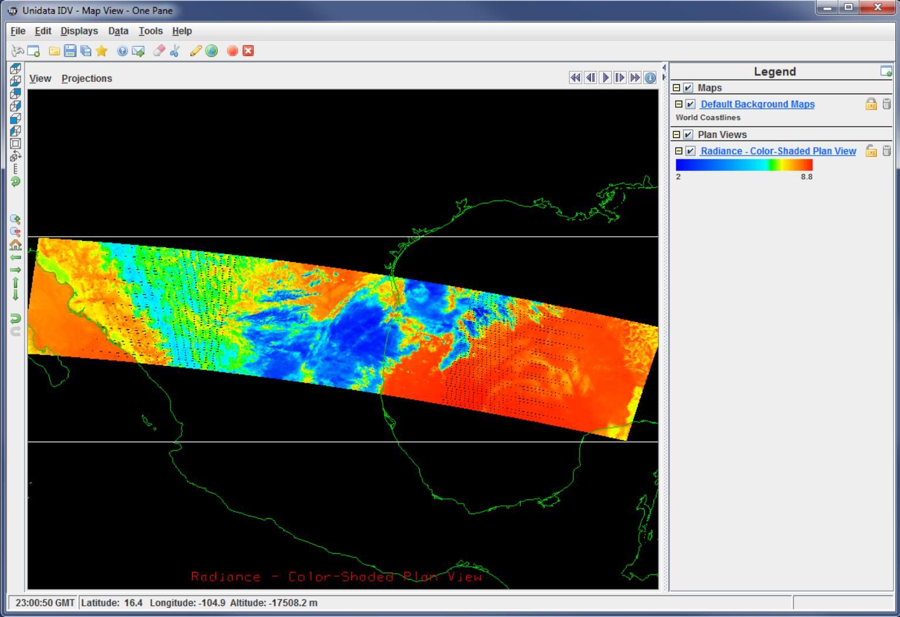

Please see The HDF Group's new Support Portal for the latest information.
JPSS data products will be distributed in the HDF5 file format. However, many applications that will use this data are "netCDF-based". That is, many popular data analysis and visualization applications used by the climate and weather forecasting and research communities assume their data conforms to the netCDF data model. In addition, many programmers prefer to implement applications using a netCDF application programming interface (API).
Although the new version of the netCDF library, netCDF-4, uses HDF5 as its storage layer, it cannot read arbitrary HDF5 files. Applications that use the netCDF-4 API cannot read HDF5 files that do not conform to the netCDF-4 data model. Since JPSS product files do not conform to the netCDF-4 data model, the netCDF-4 library cannot access them. This means, in turn, that applications that use the netCDF-4 library cannot access JPSS product files. Applications that require a netCDF-4 classic data model have additional restrictions for accessing arbitrary HDF5 files.
To further complicate matters, many data analysis and visualization tools need more than just a netCDF-4 accessible file. These tools rely on metadata such as dimension variables, geolocation information, and miscellaneous attributes to interpret and display the data. Since this metadata is not present in JPSS product files, additional modifications may be needed before data can be meaningfully analyzed and visualized. Fortunately much of this information is available in JPSS XML product and geolocation files.
The h5augjpss tool has options to make modifications to JPSS files that will aid in allowing some common "netCDF-based" applications to use or display them. Certain options can be used to hide unsupported HDF5 elements that block access to the files; these options should at least allow access with ncdump and other netCDF-4 tools. Other options can be used to incorporate information from the XML product and geolocation files. Additional metadata required for specific applications can then be added using h5edit or HDFView.
Example
Attempting to use ncdump to view the contents of an unmodified JPSS file, SVI05_aqu_d20110314_t0827436_e0828535_b47134_c20110314115650161557_grav_dev.h5, downloaded from the GRAVITE server fails as expected and generates the following status message:
./ncdump -h SVI05_aqu_d20110314_t0827436_e0828535_b47134_c20110314115650161557_grav_dev.h5:
NetCDF: Bad type ID
The h5augjpss tool's option -o1 will modify the file to hide the HDF5 elements that block ncdump from displaying the file. Other tools require one or more of the three other command options. In order to visualize the file with IDV, all four of the augmentation options are needed, which the tool runs by default if no options are specified. The command for this file is:
./h5augjpss D34862-03_NPOESS-CDFCB-X-Vol-III_D_VIIRS-I5-SDR-PP.xml SVI05_aqu_d20110314_t0827436_e0828535_b47134_c20110314115650161557_grav_dev.h5
ncdump will now display the contents of the modified file, abbreviated here with ...:
netcdf SVI05_aqu_d20110314_t0827436_e0828535_b47134_c20110314115650161557_grav_dev {
dimensions:
AlongTrack = 1536 ;
CrossTrack = 6400 ;
...
variables:
int AlongTrack(AlongTrack) ;
ushort BrightnessTemperature(AlongTrack, CrossTrack) ;
BrightnessTemperature:Description = "Calibrated Top of Atmosphere (TOA)
Brightness Temperature for each VIIRS pixel" ;
...
float BrightnessTemperatureFactors(Factors) ;
...
float Height(AlongTrack, CrossTrack) ;
float Latitude(AlongTrack, CrossTrack) ;
float Longitude(AlongTrack, CrossTrack)
...
ushort Radiance(AlongTrack, CrossTrack) ;
...
}
Visualizing the data in the file's Radiance dataset correctly with IDV requires seven additional attributes: /Latitude/units, /Longitude/units, /Radiance/{coordinates, add_offset, scale_factor, valid_min, valid_max}. These can be added with HDFView or with an h5edit command such as:
./h5edit -c "CREATE /Radiance/valid_min {H5T_STD_I32LE DATASPACE SIMPLE(1) DATA {0}};" SVI05_aqu_d20110314_t0827436_e0828535_b47134_c20110314115650161557_grav_dev.h5
After this is done, IDV will display a visualization of the Radiance dataset in the file. See the picture below.
Use the menu items on the left or click on the links below to access documentation and source code for the tool.
- - Last modified: 14 October 2016